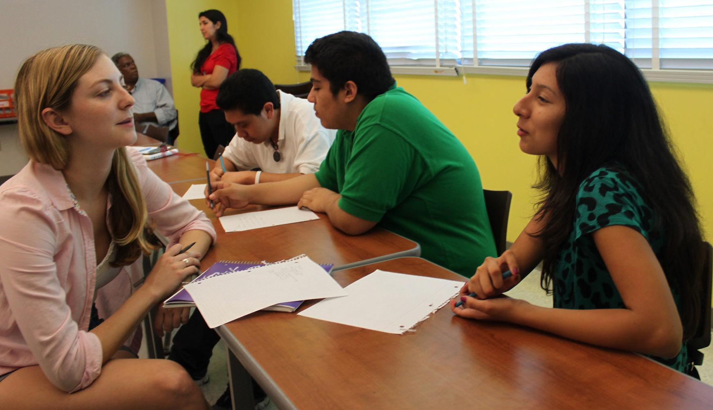
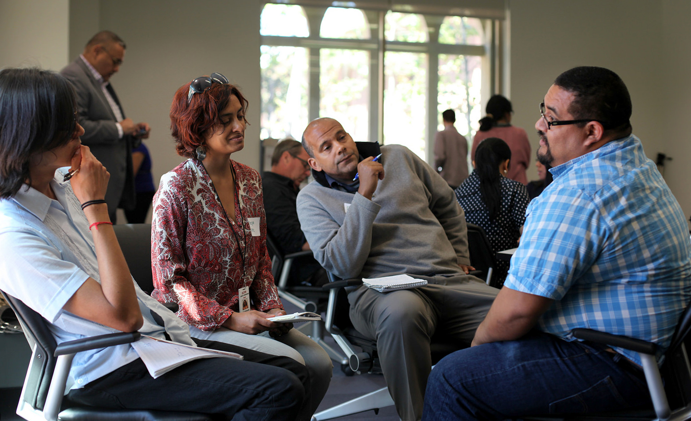

This August will mark 50 years since Watts — along with most of South Los Angeles — erupted in six days of racially charged upheaval. Thirty-four people were killed. Nearly 4,000 were arrested. Forty million dollars in property was damaged. In the aftermath, officials and researchers found that the causes went much deeper than the arrest of 21-year-old Marquette Frye and tensions with the police. They identified social and economic barriers facing African Americans in South Los Angeles as underlying triggers. Since then, the area has undergone sweeping demographic transformations from predominantly African American to Latino. But many of the original challenges remain.
As the United States continues to struggle with racial inequality, this project investigates current structural problems and potential solutions in South Los Angeles. We revisit issue areas that the 1965 McCone Commission Report identified as contributing to the unrest, including insufficient housing, healthcare, transportation, and jobs. Through a partnership between USC Annenberg School for Communication and Journalism’s Metamorphosis Project, Intersections South LA, five additional news outlets, six community organizations and a local high school, we attempt to create a glimpse of contemporary challenges, as well as where change is happening that could be expanded.
Reporting Partnership with Augustus Hawkins High School
The project kicked off in fall 2014 with a collaboration between USC Annenberg students and journalism classes at Augustus Hawkins High School, located in an area heavily impacted by the 1965 and 1992 riots near Vermont and Slauson avenues. The high school and university students reported in partnership, asking people who live in the area what they know about the riots and what they thought were the lessons to be learned. (Not much for younger residents of any background, whereas older, African American residents had vivid memories and thoughts on the topic.) The students also interviewed residents about what they saw as contemporary issues transportation, jobs, and housing were often cited and solutions to them.
The second part of the project is a response to Metamorphosis Project research which has found a disconnect between local organizations serving South Los Angeles and media coverage of the area, which contributes to lower levels of civic engagement. In February, we convened a meeting with six South Los Angeles organizations to help them identify and share stories about their communities. As part of the workshop, they were trained in how to “pitch” a story that is solutions-oriented and appeals to reporters.
Bringing Media and Organizations Together
In March, a second workshop brought together media outlets and organizations, to connect on these stories and create more lasting connections. The organizations “speed pitched” local and ethnic reporters from Hoy, La Opinion, LA Sentinel, Southwest Wave, Intersections South LA, and KPCC. There were also meaningful interactions between English and Spanish language local and ethnic media and plans to find ways to collaborate on reporting. These stories will be exchanged by the respective media outlets, and will also appear on the Watts Revisited site.
Forum
On April 23, a public forum will feature stories produced as part of this series. The forum will situate the articles in the larger context of media coverage of South LA past and present. Larry Aubry, a community activist and writer who was a probation officer when the Watts Riots broke out will share his reflections, along with his daughter, journalist Erin Aubry Kaplan, who covered the 1992 unrest and subsequently was part of an LA Times team created to provide coverage of the area. Then community organizations, media outlets, and members of the public will be invited to extend the discussion of community issues and story ideas through a participatory “speed brainstorming” session.
The intention is that these stories and discussions will be a jumping off point for deeper coverage of the 50th anniversary in Los Angeles. The project hopes to encourage coverage that will look not only to the story of what happened, but why it happened, where things stand today, and what changes can and are being made.